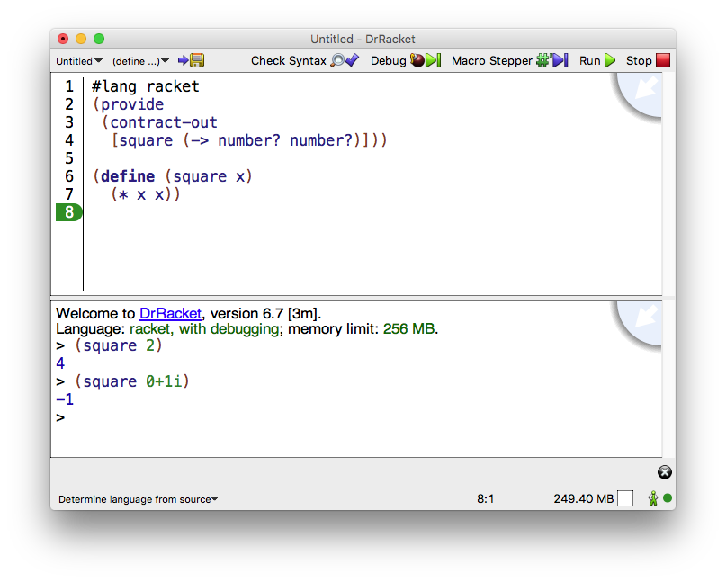

1 界面要素
DrRacket窗口有三个部分:顶部的一排按钮,中间的两个编辑面板,以及底部的状态线。

顶部的编辑面板称为 definitions window, 用于定义程序。 上图显示了一个定义函数 square 的程序。
底部的面板,称为 interactions window, 用于交互式地评估 Racket 表达式。 交互窗口中的 Language 行指出了定义和交互窗口中哪些基元是可用的。 在上图中,语言是由程序源的 #lang 行决定的。
本手册后面的 交互窗口 将进一步描述交互窗口。
点击 Run 按钮可以评估定义窗口中的程序,使程序的定义在交互窗口中可用。 考虑到上图中 square 的定义,在交互作用窗口中输入 (square 2) 会产生 4 的结果。 再次点击 Run 按钮可以重置交互窗口并重新评估定义窗口。
签名框(可通过右上角的蓝色四分之一圆圈获得)提供了对文档中摘要信息的访问。 DrRacket 窗口底部的 status line 提供了关于当前行和编辑光标的位置、 是否可以修改当前文件以及 DrRacket 当前是否正在评估任何表达式等信息。 当 DrRacket 正在 "回收" 内部资源(如内存)时, recycling icon 会闪烁。